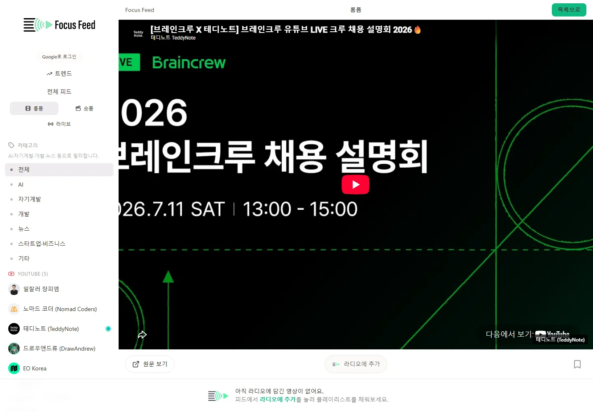

롱폼 / 홈 카드
16:9 썸네일이 최우선, 길이는 우하단, 제목은 2줄, 메타는 한 단계 낮게. 카드 외곽선 없이 그리드의 여백으로 분리한다.
YouTube의 영상 문법, Apple의 제품 구조, Spotify의 지속 재생 경험을 Focus Feed의 한 시스템으로 조합한다.
홈 영상 카드와 롱폼/숏폼 구분은 YouTube. 앱 전체의 여백·계층·탐색은 Apple. 라디오·큐·현재 재생·확장 플레이어는 Spotify를 기준으로 삼는다.
공식 YouTube 웹을 Playwright 1440×1000으로 직접 캡처했다. 카드와 Shorts는 같은 영상 서비스 안에서도 완전히 다른 탐색 문법을 사용한다.
16:9 썸네일이 최우선, 길이는 우하단, 제목은 2줄, 메타는 한 단계 낮게. 카드 외곽선 없이 그리드의 여백으로 분리한다.

세로 9:16 단일 캔버스, 행동은 오른쪽 레일, 작성자·설명은 영상 하단. 다음 콘텐츠는 세로 스크롤로 예측 가능하다.
Apple Music 웹은 좁고 안정된 사이드바, 넓은 콘텐츠 캔버스, 하단의 지속 재생 레이어로 기능과 콘텐츠를 분리한다.

내비게이션은 조용하고 위치가 고정된다. 한 화면의 대표 메시지 또는 콘텐츠가 시선을 독점하며 보조 기능은 뒤로 물러난다.

탐색 패널은 좋아졌지만 사이드바와 카드 행동 수가 여전히 경쟁한다. 사용 빈도가 낮은 도구는 상세 메뉴로 더 정리할 수 있다.
Spotify는 어두운 외형보다 “콘텐츠를 탐색해도 재생 문맥이 끊기지 않는 것”이 핵심이다. 현재 재생과 큐는 항상 복귀 가능한 상태다.

현재 콘텐츠, 중앙 재생 제어, 큐·볼륨 보조 기능이 명확한 3구역을 이룬다. 라이브러리와 재생 상태는 동시에 보인다.

Focus Feed 롱폼은 재생 화면이 곧 탐색 화면이라 이전/다음 문맥과 상세 정보가 약하다. 롱폼은 카드 목록→watch 상세의 2단계가 적합하다.
현재 Focus Feed는 둘 다 같은 ReelSlide를 쓴다. 롱폼은 16:9 카드/상세 플레이어, 숏폼만 세로 스냅으로 분리해야 한다.
상단 검색과 좌측 탐색은 고정하되 콘텐츠에 시각적 우선권을 준다. glass 효과는 플레이어·탐색처럼 기능 레이어에만 쓴다.
현재 재생 정보를 좌측, 핵심 제어를 중앙, 큐·요약·볼륨을 우측에 배치한다. 확장 시 큐와 요약을 동시에 볼 수 있게 한다.
| 영역 | 기준 제품 | 카피할 패턴 | 카피하지 않을 것 |
|---|---|---|---|
| 메인 홈 | YouTube + Apple | 16:9 무테 카드, 2줄 제목, 채널/시간 메타, 넓은 정렬 | YouTube 로고·빨간 CTA·광고 구조 |
| 롱폼 | YouTube | 카드 탐색 → watch 상세, 관련 영상, 명확한 재생 문맥 | 현재의 세로 자동 넘김 |
| 숏폼 | YouTube Shorts | 9:16 중앙 캔버스, 오른쪽 액션 레일, 세로 스냅 | 데스크톱 전체 폭 확대 |
| 전역 UX | Apple | 여백, 시각 계층, 안정된 사이드바, 절제된 material | 장식 목적의 과도한 glass |
| 라디오/큐 | Spotify | 지속 플레이어, 3구역 제어, 큐와 현재 재생 강조 | Spotify 고유 초록색·앨범 중심 정보 모델 |
홈 카드에서 요약 CTA를 hover/선택 시 보조 행동으로 낮추고, 롱폼 전용 목록/상세와 Shorts 전용 뷰를 분리.
Apple식 8pt 간격과 3단계 텍스트 계층으로 사이드바·탐색·콘텐츠의 밀도를 통일.
Spotify식 3구역 하단 플레이어, 우측 큐 패널, 확장 플레이어에서 영상·요약·대기열을 한 문맥으로 연결.